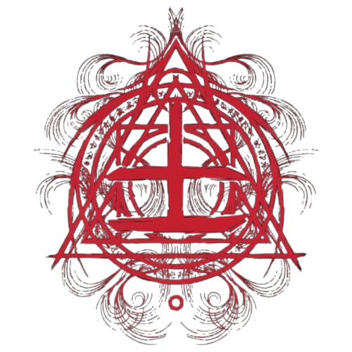
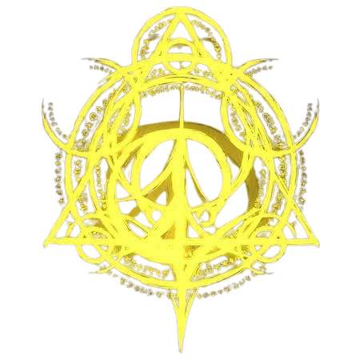
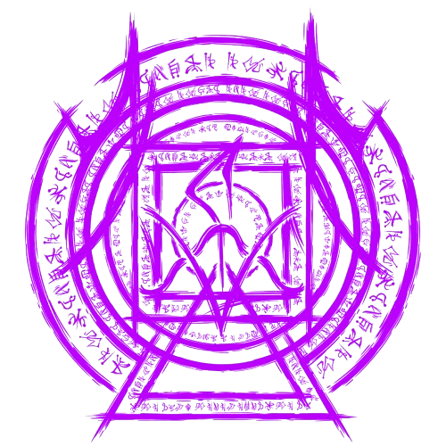

Os Elementos do Outro Lado
O Outro Lado é composto por diferentes elementos que representam forças fundamentais do paranormal. Sangue, Morte, Conhecimento e Energia possuem características próprias e influenciam a realidade de maneiras distintas. Esses elementos estão presentes nas manifestações paranormais e se relacionam entre si, formando um ciclo de oposição e equilíbrio.

SANGUE
O Sangue é a entidade do sentimento. Ele busca a intensidade: dor, obsessão, paixão, amor, fome, ódio. Tudo que envolve sentir uma emoção extrema agrada a entidade de Sangue.
Os sentimentos extremos do Sangue superam a razão e a calmaria do Conhecimento.

MORTE
Morte é a entidade do tempo. Ela busca os momentos vivenciados, distorcendo a percepção egóica da existência de cada indivíduo para seu próprio agrado.
A distorção temporal da Morte arruína a percepção carnal do Sangue.

CONHECIMENTO
O Conhecimento é a entidade da consciência. Descobrir, aprender, conhecer, decifrar. Ter a própria percepção do Outro Lado e suas entidades agrada o elemento de Conhecimento.
A razão e lógica do Conhecimento reintegram e suprimem o caos da Energia.

ENERGIA
A Energia é a entidade do caos. Tudo que não pode ser explicado, o intangível, a anarquia. A constante mudança, o calor e o frio, a luz e as trevas. Tudo que envolve a imprevisibilidade e a transformação agrada a entidade de Energia.
A transformação da Energia sobrecarrega os efeitos da Morte.